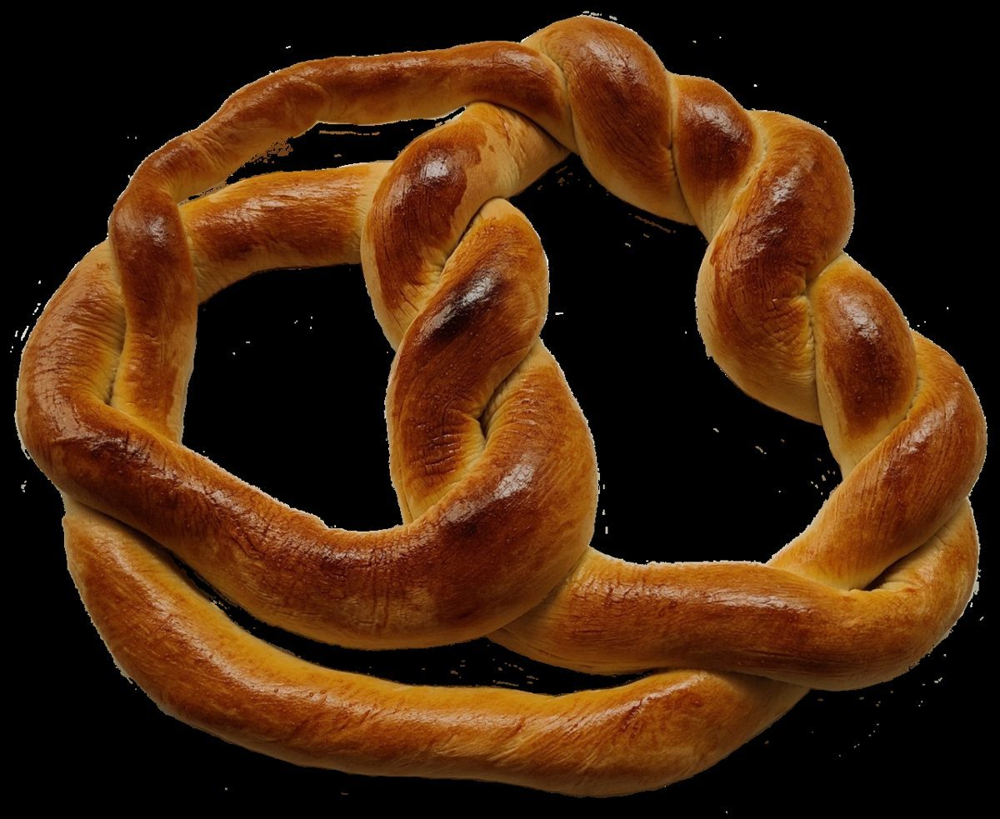
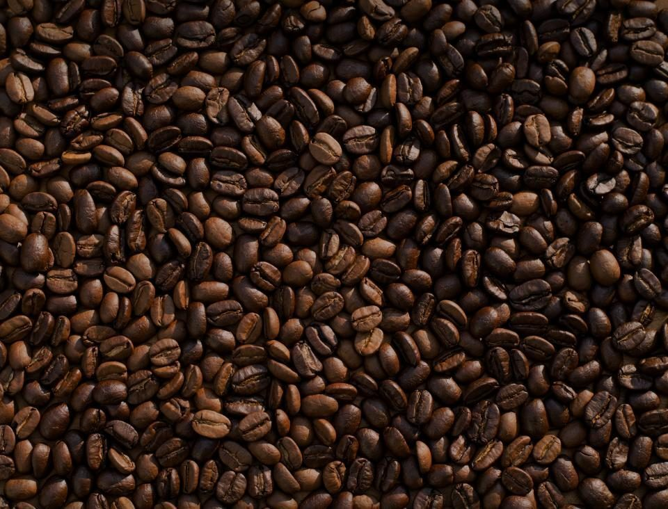

cafe / 〒409-3701
牛蒡茶cafe
ウキの配置図に見立てた、
サンプルのホームページです。
※ ウキの見立ては制作側の連想で、お店の理念・由来とは無関係です。
③ トップ ── まず目に入る場所
ウキの先端は、遠くからでも目印になる部分です。このページでは、お店の名前と所在地を最初にお伝えします。
| 店名 | 牛蒡茶cafe |
|---|---|
| 所在地 | 〒409-3701 山梨県笛吹市芦川町上芦川303 |
| 電話 | 準備中 |
| 営業時間・定休日 | 準備中 |
| @goboucha_cafe |
④⑤⑥② ほかの部位へ



